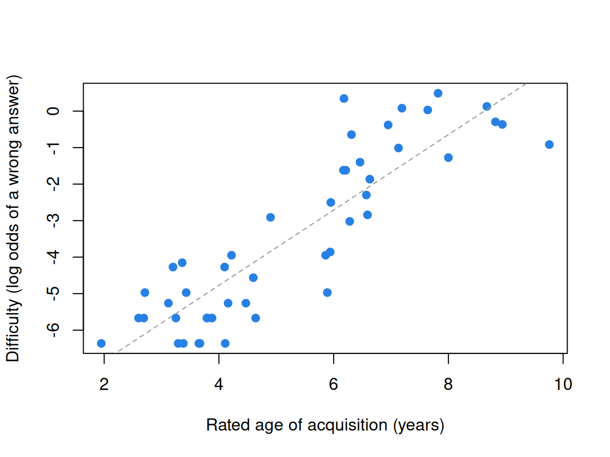

Validity as causation: Borsboom’s view
What this is for
Validity as an argument ended on a tension: an argument for every proposed use is a great deal to ask, and it may never be finished. This lesson takes up a narrower account. Borsboom, Mellenbergh and van Heerden (2004) propose that a test is valid for an attribute when the attribute exists and differences in it cause differences in the responses. The evidence that matters most is then a theory of how respondents arrive at their answers, one that could be shown wrong. We work through the classic example, the balance scale, and then ask two questions of IRW data: does a simple theory of a vocabulary task predict which words are hard, and does a robust Stroop effect mark an attribute on which people differ?
Goals
By the end of this lesson you should be able to:
- state Borsboom et al.’s definition of validity and the two claims it makes;
- say how it differs from the argument-based view, and what each assumes;
- derive the predictions of a theory of response behaviour, including an item on which respondents using a less advanced strategy should do better;
- distinguish an effect that a manipulation causes within each person from an attribute on which people differ, and check which one a score tracks;
- set out three ways the causal definition might relate to the argument-based view.
Core ideas
Is the bar too high?
Should every measure of length first reckon with every use it might be put to? A ruler cuts shelves and tracks a child’s growth, and nobody writes an argument for each. For many educational uses the argument is the right tool, since the uses are narrow and the stakes real. But if no argument is ever complete, a researcher who wants to know whether a task measures what it was built to measure may wonder where to start. Borsboom et al. (2004) narrow the question.
Borsboom’s definition
Their definition has two parts. A test is valid for measuring an attribute if and only if the attribute exists and “variations in the attribute causally produce variations in the outcomes of the measurement procedure” (Borsboom et al., 2004, p. 1061). They present this as a return to an older idea, which they trace to Kelley (1927, p. 14): a test is valid if it measures what it claims to measure (as cited by Borsboom et al., 2004, p. 1061).
Three features set it apart from the argument-based view.
- Validity is a property of the test. Validation is the research that finds out whether a test has it (p. 1063). A test can have the property while some use of its scores is unwise.
- It is yes or no, as truth is: the attribute exists and affects the responses, or not (p. 1070). Reliability, bias and usefulness still matter, under their own names.
- The evidence is about response processes. A pattern of correlations with other measures, the nomological network of Cronbach and Meehl (1955), can corroborate a theory, they argue, but networks in psychology are loose enough that many attributes besides the intended one would fit them (pp. 1064–1065). What needs testing is a theory of how the attribute produces the answers (p. 1061): construct representation ahead of nomothetic span, in the terms of Whitely (1983), now Embretson (Borsboom et al., 2004, p. 1067).
Borsboom et al. take the same realist stance: if an attribute isn’t there, no test measures it, however useful the scores. What does the definition assume? That the attribute exists apart from the test; that causation runs from attribute to responses, so formative indices such as socioeconomic status fall outside it (p. 1069); and that we know whether the attribute varies between people or within a person, a point we return to below.
A theory of response behaviour: the balance scale
What does a theory of response behaviour look like? Borsboom et al.’s example is the balance scale (p. 1068), studied by Inhelder and Piaget (1958) and turned into rules by Siegler (1976). A child sees a beam with a stack of weights on one peg on each side of the fulcrum, and says whether it will tip left, tip right or balance. Children are proposed to move through four rules:
- Rule I: look only at the number of weights; the heavier side goes down.
- Rule II: the same, but when the weights are equal, the side with weights farther out goes down.
- Rule III: consider weights and distances, and when they point opposite ways, guess.
- Rule IV: compare weight times distance on each side (the torque), which is always right.
The theory says what each rule answers on every item, so it predicts whole response patterns, not only totals.
Try it: four rules, one beam
Set the weights and pegs. The table gives each rule’s answer to this item.
The starting item puts four weights on peg 2 against two on peg 3; the heavier side has more torque (8 against 6) and goes down. Rules I and II get it right from the weights alone; Rule III sees the cues disagree and guesses. On such items, children using an earlier rule should outscore those using a later one. Move the right-hand stack to peg 5 and only Rule IV is sure to be right.
A theory that predicts a drop in performance as children develop is a theory the data can break. It says what must happen between showing the item and hearing the answer for the task to measure the child’s stage (Borsboom et al., 2004, p. 1068).
Try it: rule classes to response patterns
If each child uses one rule, the rules are latent classes, and the mix of rule users predicts the proportion correct on each item type. The first slider moves a group along the sequence (0: everyone on Rule I; 3: everyone on Rule IV); the second sets how much rule use overlaps. The curve is stylized, not data.
The heavier-side conflict line starts at 1, falls to about 0.56 when most children use Rule III, and climbs again as Rule IV takes over. A single ability that makes every item easier as it grows can’t produce that dip, which is why Jansen and van der Maas (1997) tested the rules as latent classes. Totals hide the difference: Rule II and Rule III children both expect 4 of the 6 right, but not the same 4. In 805 respondents aged 5 to 19, Jansen and van der Maas (2002) found that children use rules, that different ages use different rules, and that some use them inconsistently. The theory isn’t settled (Borsboom et al., 2004, p. 1068); it is definite enough to test.
Does the attribute exist, and in whom?
A manipulation can cause differences in responses without there being an attribute on which people differ. Borsboom, Mellenbergh and van Heerden (2003) distinguish between-subjects from within-subjects readings of a latent variable, and the 2004 paper draws the consequence: variation across people can only be caused by something that varies across people, and variation within a person only by something that varies within that person (pp. 1069–1070). Evidence at one level doesn’t establish the other.
In the Stroop task (Stroop, 1935), naming a word’s ink colour takes longer when the word names another colour, an effect caused within each person. Does each person’s effect then measure a trait on which people differ? Only if they differ stably. Hedge, Powell and Sumner (2018) argue that tasks become established for their effects partly because respondents differ little in them, which leaves the effects unreliable as measures of individuals.
Try it: a common cause, small differences
Here 250 simulated respondents do a Stroop-like task twice. Conflict slows them by 0.11 s on average; the sliders set how much the true slowing varies from person to person and how many trials each condition gets. Trial response times have SD 0.8 s, about what the IRW table below shows.
Set the person SD to 0. The group effect stays clear (t near 7 with 25 trials) while the retest correlation hovers around zero: the manipulation slows everyone, and there is nothing to rank. At 0.1 s the retest correlation is low with 25 trials and passes 0.6 with 240, the number Hedge et al. gave per condition. A clear group effect shows that the cause operates within people, not that there is a between-person attribute.
Replacement, complement, or a different grain size?
How does the causal definition sit beside the argument-based view? If validity concerns only the attribute, where do uses go? What about score variation the attribute doesn’t cause, such as familiarity with a tablet? And the examples that make the causal view persuasive, balance scales and small cognitive tasks, are a different grain of instrument from a state test serving several uses. There are three readings, each resting on its own assumptions.
- A replacement. Validity means the causal claim and nothing else. Borsboom et al. offer their conception as an alternative to the current consensus, with consequences central to test use but not to validity (p. 1069), and a test’s fitness for a purpose judged under a plainer heading such as overall quality (p. 1070). This assumes that what a test measures can be settled apart from any use, and that validity is clearer kept for it.
- A complement. The causal claim is one warrant inside an argument, for the scoring and extrapolation links, backed by response-process evidence, which the Standards already list as a source (AERA, APA & NCME, 2014, pp. 13–14). This assumes an argument can carry a causal claim as one link, and that uses and consequences belong under the same word.
- A concept for a different grain size. The causal definition fits instruments with one attribute and a known response process; the argument fits instruments whose scores summarize a content domain for many uses, where no single attribute may be doing the causing. This assumes the two answer different questions about different kinds of instrument, so one concept of validity need not cover both.
Which reading holds has no settled answer; challenge problem 6 leaves it open. If you’ve done Structural equation modeling with lavaan, its equivalent models, different causal structures that fit the same covariances equally well, carry the same caution about causal claims.
Simulate
The code below is the between/within widget in R, for person SDs of 0, 0.1 and 0.2 s and for 25 and 240 trials per condition. It is base R and runs in about a second.
With the seed as written and 25 trials, a person SD of 0 gives t = 6.6 and a retest correlation of 0.04; a person SD of 0.2 gives t = 4.2 and 0.48. A clearer group effect is no sign of a better ranking. Congruent RT retests at 0.9 or above throughout, since the simulated respondents differ in speed. Correlations move by about ±0.06 between runs, so compare r_effect with reliability. Then set sigma to 0.3: how many trials does a person SD of 0.1 need for a retest correlation of 0.7?
Download this code to run it in your own R session.
With real data
The main example, vocab_assessment_3_to_8_year_old_children, tests a theory of response behaviour, standing in for the balance scale, which the IRW doesn’t hold. The contrast, robison_2026_retesting_stroop, has a cause that works in everyone and asks whether it ranks anyone. Download the code; it needs only base R.
A vocabulary task with a theory
oREV is a receptive vocabulary task for German-speaking children aged 3 to 8 (Bohn et al., 2022). A child hears a word and picks one of four pictures: the target, a semantically related distractor, a phonologically similar one and an unrelated one. Twenty of the 52 words were added to an existing task for their rated ages of acquisition, between six and ten years (pp. 8–9). A response is 1 when the child picked the target, and nothing is missing. The item column is the trial position, which holds different words in the two presentation orders, so the word (targetword) is the item here.
Code
# The IRW table, from the CSV link on its landing page (pinned to one version).
orev <- read.csv(paste0("https://redivis.com/api/v1/tables/datapages.item_response_warehouse:v60_0.",
"vocab_assessment_3_to_8_year_old_children/rows?format=csv"))
c(rows = nrow(orev), children = length(unique(orev$id)), words = length(unique(orev$targetword)),
missing = sum(is.na(orev$resp))) rows children words missing
30212 581 52 0 Code
# `item` is the trial position, and the two presentation orders put different
# words at the same position, so the word itself (`targetword`) is the item here.
unique(orev[orev$item == 1, c("item", "itemcov_order", "targetword")])| item | itemcov_order | targetword | |
|---|---|---|---|
| 1 | 1 | orderB | door |
| 169 | 1 | orderA | squirrel |
Code
round(range(tapply(orev$cov_age, orev$id, mean)), 1)[1] 3 8The theory is simple: a child picks the target once they know the word, and children learn words at about the ages adults rate. Before any response is seen, it predicts that later-acquired words will be harder.
Code
# resp is 1 when the child picked the pictured target. One row per word: its
# proportion correct and its rated age of acquisition (in years).
words <- data.frame(p = tapply(orev$resp, orev$targetword, mean),
aoa = tapply(orev$itemcov_aoa_german_comb, orev$targetword, unique))
# Difficulty on the logit scale: the log odds of a wrong answer. Words that every
# child answered correctly have no finite logit and are set aside.
words$logit <- qlogis(1 - words$p)
fin <- words[words$p < 1, ]
c(words_all_correct = sum(words$p == 1), words_used = nrow(fin))words_all_correct words_used
5 47 Code
round(c(r_aoa_logit = cor(fin$aoa, fin$logit),
rank_r_aoa_p_all_words = cor(words$aoa, words$p, method = "spearman")), 2) r_aoa_logit rank_r_aoa_p_all_words
0.88 -0.86 Code
head(words[order(words$aoa), c("aoa", "p")], 4)| aoa | p | |
|---|---|---|
| cap | 1.95 | 0.9982788 |
| snake | 2.00 | 1.0000000 |
| squirrel | 2.60 | 0.9965577 |
| eye | 2.69 | 0.9965577 |
Code
tail(words[order(words$aoa), c("aoa", "p")], 4)| aoa | p | |
|---|---|---|
| cello | 8.67 | 0.4681583 |
| kayak | 8.82 | 0.5731497 |
| satellite | 8.94 | 0.5903614 |
| orchid | 9.76 | 0.7142857 |
Code
plot(fin$aoa, fin$logit, pch = 19, col = "#2780e3",
xlab = "Rated age of acquisition (years)", ylab = "Difficulty (log odds of a wrong answer)")
abline(lm(logit ~ aoa, data = fin), lty = 2, col = "#999999")
Age of acquisition correlates 0.88 with difficulty over the 47 words that some child missed (the rank correlation with proportion correct, over all 52, is −0.86). Against the baseline of Constructs and construct maps, where a map written from item text ordered nine number-series items at −0.76, this theory orders the words rather well. Both orders also put later-acquired words later in the task, so fatigue could mimic the pattern; the check below rules that out.
The theory’s other prediction, that older children know more words, holds too:
Code
# The same theory says older children know more words.
kids <- data.frame(age = tapply(orev$cov_age, orev$id, mean),
score = tapply(orev$resp, orev$id, sum))
round(cor(kids$age, kids$score), 2)[1] 0.63Age correlates 0.63 with the number of words a child got right. And the wrong answers? The theory as stated says a child who doesn’t know a word guesses, so wrong answers should split evenly across the three distractors.
Code
# A second prediction. If a child who doesn't know a word guesses at random, wrong
# answers should spread evenly over the three other pictures. The distractor types
# are coded dist1, dist2, dist3; the chosen words show which is which (ruin ->
# fortress is semantic; Gazelle -> Libelle, "dragonfly", is phonological).
unique(orev[orev$targetword %in% c("ruin", "gazelle") & orev$chosencategory != "target",
c("targetword", "chosencategory", "chosenword")])| targetword | chosencategory | chosenword | |
|---|---|---|---|
| 7555 | ruin | dist1 | fortress |
| 7569 | ruin | dist3 | goalkeeper |
| 7574 | ruin | dist2 | railtracks |
| 10481 | gazelle | dist1 | deer |
| 10687 | gazelle | dist3 | astronaut |
| 10702 | gazelle | dist2 | dragonfly |
Code
wrong <- orev$chosencategory[orev$resp == 0]
wrong <- factor(wrong, levels = c("dist1", "dist2", "dist3"),
labels = c("semantic", "phonological", "unrelated"))
round(prop.table(table(wrong)), 2)wrong
semantic phonological unrelated
0.47 0.31 0.22 Code
chisq.test(table(wrong))$p.value < 0.001[1] TRUEThey don’t: 47% go to the semantic distractor, 31% to the phonological one and 22% to the unrelated one. Children who miss a word often know something about it. This part of the theory is broken by the data, which is what a theory of response behaviour is for; the repair is partial knowledge, and a model for which option a respondent picks (Nominal response and multiple-choice models) can write it down.
A Stroop task given twice
Robison et al. (2026) gave undergraduates a battery of cognitive tasks over four weekly sessions, repeating the first two sessions in the last two, so each task was retaken about two weeks later. Ours is a timed Stroop (Burgoyne et al., 2023): RED or BLUE appears in red or blue ink, and respondents click the response word that matches the ink, as many times as they can in 90 seconds (Robison et al., 2026, Method). The items are the four word–ink combinations, and itemcov_conflict marks whether word and ink disagree. A response is 1 when correct; response times are in seconds.
Code
stroop <- read.csv(paste0("https://redivis.com/api/v1/tables/datapages.item_response_warehouse_5:v5_0.",
"robison_2026_retesting_stroop/rows?format=csv"))
table(item = stroop$item, conflict = stroop$itemcov_conflict) conflict
item congruent incongruent
BlueinBlueInk 7383 0
BlueinRedInk 0 7385
RedinBlueInk 0 7253
RedinRedInk 7346 0Code
c(respondents = length(unique(stroop$id)), trials = nrow(stroop))respondents trials
250 29367 Code
table(wave = stroop$wave)wave
1 2
13953 15414 Code
# Trials per respondent in each session (the timed block lasts 90 s).
round(tapply(stroop$id, stroop$wave, length) / tapply(stroop$id, stroop$wave, function(x) length(unique(x)))) 1 2
57 64 First, a check on the pipeline: the task’s own score, correct minus incorrect responses, retested at 0.80 in Robison et al.’s Table 6.
Code
# Sanity check: the task's own score (correct minus incorrect responses in the timed
# block) should rank people about as consistently as Robison et al. report.
sc <- aggregate(resp ~ id + wave, data = stroop, FUN = function(x) sum(x == 1) - sum(x == 0))
sc <- reshape(sc, idvar = "id", timevar = "wave", direction = "wide")
round(cor(sc$resp.1, sc$resp.2, use = "complete.obs"), 2)[1] 0.81We get 0.81. Now the effect: each respondent’s mean response time on correct conflicting trials minus that on correct congruent trials.
Code
# The Stroop effect for each respondent and session: mean RT (seconds) on correct
# incongruent trials minus mean RT on correct congruent trials. Trials faster than
# 0.2 s or slower than 5 s are set aside (about 1% of correct trials).
ok <- stroop$resp == 1 & stroop$rt > 0.2 & stroop$rt < 5
round(mean(!ok[stroop$resp == 1]), 3) # share of correct trials set aside[1] 0.012Code
m <- aggregate(rt ~ id + wave + itemcov_conflict, data = stroop[ok, ], FUN = mean)
m <- reshape(m, idvar = c("id", "wave"), timevar = "itemcov_conflict", direction = "wide")
m$effect <- m$rt.incongruent - m$rt.congruent
s1 <- m[m$wave == 1, ]
n_trials <- aggregate(rt ~ id + wave + itemcov_conflict, data = stroop[ok, ], FUN = length)
median(n_trials$rt) # correct trials per condition and session[1] 25Code
round(c(n = nrow(s1), mean_effect = mean(s1$effect), sd_effect = sd(s1$effect),
d_z = mean(s1$effect) / sd(s1$effect),
t = mean(s1$effect) / (sd(s1$effect) / sqrt(nrow(s1))),
share_positive = mean(s1$effect > 0)), 2) n mean_effect sd_effect d_z t
244.00 0.11 0.29 0.37 5.71
share_positive
0.70 At session 1, conflict slows respondents by 0.11 s on average (\(d_z = 0.37\), \(t = 5.7\) over 244 respondents), and 70% show a positive effect. The manipulation works. Does each respondent’s effect say something stable about them?
Code
# Retest: the same respondents, about two weeks later.
b <- merge(m[m$wave == 1, ], m[m$wave == 2, ], by = "id", suffixes = c("_1", "_2"))
round(c(n_both = nrow(b),
r_effect = cor(b$effect_1, b$effect_2),
r_congruent = cor(b$rt.congruent_1, b$rt.congruent_2),
r_incongruent = cor(b$rt.incongruent_1, b$rt.incongruent_2)), 2) n_both r_effect r_congruent r_incongruent
234.00 0.17 0.73 0.64 Code
round(mean(m$effect[m$wave == 2]), 2) # the group effect at session 2[1] 0.1The effect’s retest correlation is 0.17, against 0.73 for congruent and 0.64 for conflicting response time. Each effect rests on a median of 25 correct trials per condition and session, and the widget shows what more trials would buy. Still, the pattern is the one Borsboom et al.’s distinction points to: conflict slows people, clearly enough to detect in 244 of them; people differ stably in speed; they differ little, over two weeks, in how much conflict slows them. Trials as items takes the reliability paradox further.
Where does that leave a practitioner? Before I trust a score as a measure of an attribute, I want two checks. First, one prediction from a theory of how people answer the items that the data could have broken and didn’t: which items should be harder, or an item that lower scorers should get right more often. Second, evidence that people differ stably on the attribute, not only that a manipulation moves the group mean. In this lesson’s data, oREV meets the first (and shows where its theory needs repair); the Stroop effect is clear at the group level but barely ranks people, so it doesn’t meet the second.
Problems
- The reliability of a difference. Let \(X\) and \(Y\) have equal variances, reliabilities \(\rho_X\) and \(\rho_Y\), and correlation \(r\). Show that, if their errors are uncorrelated, the reliability of \(X - Y\) is \(\frac{(\rho_X + \rho_Y)/2 - r}{1 - r}\) (Cronbach & Furby, 1970). Plug in the Stroop table’s retest correlations for congruent and conflicting response time as rough reliabilities, with \(r\) from the same data, and compare the result with the effect’s retest correlation of 0.17. What does the formula assume that these data might not give it?
- Words out of line. Using the oREV table, find the words whose difficulty is furthest from what their age of acquisition predicts (the residuals from the line in the plot). Look at the words and their distractors (
chosenword). Why might each be out of line? Then fit the Rasch model withmirtand check whether its item difficulties order the words as the logits do. - A screener, the causal way. California now requires reading screening in kindergarten to grade 2 (Validity as an argument, problem 5). Pick one skill a screener measures, such as naming letters quickly. What would a Borsboom-style validity study of that subtest look like: which theory of response behaviour, and which prediction that could fail? What would it leave out that a district deciding who gets extra help needs?
- When the network is all you have. Name a construct for which a network of correlations is all the evidence you can currently get. On Borsboom et al.’s definition, does that make the measure invalid, or the theory of response behaviour thin? What would it take to do better?
- Design a theory. For a construct you work with, write a theory of response behaviour strong enough to predict an item on which respondents lower on the construct do better, as conflict items do for the balance scale. What data would test it?
- Challenge (open): what kind of concept is it? Is Borsboom et al.’s definition a replacement for the argument-based view, a complement to it, or a concept for a different grain size of instrument? Make the best case you can for the reading you find weakest, stating what it assumes. This is open; there is no answer key.
Going further
- Borsboom, D., Mellenbergh, G. J., & van Heerden, J. (2004). The concept of validity. Psychological Review, 111(4), 1061–1071. https://doi.org/10.1037/0033-295X.111.4.1061. The causal definition, the argument against defining validity by a nomological network, and the balance scale as the model of a theory of response behaviour.
- Borsboom, D., Mellenbergh, G. J., & van Heerden, J. (2003). The theoretical status of latent variables. Psychological Review, 110(2), 203–219. https://doi.org/10.1037/0033-295X.110.2.203. Realism about latent variables, and the difference between between-subjects and within-subjects readings.
- Markus, K. A., & Borsboom, D. (2013). Frontiers of test validity theory: Measurement, causation, and meaning. Routledge. https://doi.org/10.4324/9780203501207. The causal view at book length, set beside other accounts of validity.
- Whitely, S. E. (1983). Construct validity: Construct representation versus nomothetic span. Psychological Bulletin, 93(1), 179–197. https://doi.org/10.1037/0033-2909.93.1.179. The distinction between the processes behind a response and a score’s relations with other measures (the author now publishes as Embretson).
- Siegler, R. S. (1976). Three aspects of cognitive development. Cognitive Psychology, 8(4), 481–520. https://doi.org/10.1016/0010-0285(76)90016-5. The balance-scale rules and the rule assessment method.
- Jansen, B. R. J., & van der Maas, H. L. J. (1997). Statistical test of the rule assessment methodology by latent class analysis. Developmental Review, 17(3), 321–357. https://doi.org/10.1006/drev.1997.0437. The balance-scale rules tested as latent classes.
- Jansen, B. R. J., & van der Maas, H. L. J. (2002). The development of children’s rule use on the balance scale task. Journal of Experimental Child Psychology, 81(4), 383–416. https://doi.org/10.1006/jecp.2002.2664. Rule use in 805 respondents aged 5 to 19, including inconsistent use.
- Hedge, C., Powell, G., & Sumner, P. (2018). The reliability paradox: Why robust cognitive tasks do not produce reliable individual differences. Behavior Research Methods, 50(3), 1166–1186. https://doi.org/10.3758/s13428-017-0935-1. Why tasks with robust effects can rank people poorly; see also the IRW vignette on the reliability paradox.
- Cronbach, L. J., & Furby, L. (1970). How we should measure “change”: Or should we? Psychological Bulletin, 74(1), 68–80. https://doi.org/10.1037/h0029382. The reliability of difference scores (problem 1).
- Michell, J. (1997). Quantitative science and the definition of measurement in psychology. British Journal of Psychology, 88(3), 355–383. https://doi.org/10.1111/j.2044-8295.1997.tb02641.x. The realist view of measurement that the causal definition shares.
Data sources
Data from the Item Response Warehouse (each table name links to its IRW page); references from IRW biblio.
vocab_assessment_3_to_8_year_old_children: Bohn, M., Prein, J. C., Delikaya, B., Haun, D. B. M., & Gagarina, N. (2022, August 24). oREV: an Item Response Theory based open receptive vocabulary task for 3 to 8-year-old children. https://doi.org/10.31234/osf.io/4z86w. Licence: CC BY 4.0.robison_2026_retesting_stroop: Robison, M. K., Campbell, S., Garner, L. D., Sibley, C., & Coyne, J. (2026). A comprehensive psychometrics of cognitive ability measures: Reliability, practice effects, and the stability of latent factor structures across retesting. Behavior Research Methods, 58(2), Article 56. https://doi.org/10.3758/s13428-025-02897-8. Licence: CC BY 4.0.
For instructors
- Source: EDUC 252 class 4 (slides c4, “Back to validity” through “What I would worry about”, slides 2–15). The two real-data analyses and the between/within simulation are new.
- Timing: about 45 minutes for the core ideas and widgets (the balance-scale widget works well at the board); the real-data section works as a 20-minute lab. Problems 3 and 6 work as small-group discussions, as slides 16–17 use the screener question.
- Changed from 252: slide 6 quotes the whole definition and slides 13–14 a long passage from Borsboom et al. (2004, p. 1068); here the lesson’s one quotation is the causal clause of the definition, and the rest is paraphrased. The slide’s aside on nomological networks becomes a paraphrase of Borsboom et al.’s argument (pp. 1064–1065). Slide 15’s worries become the three readings, left open (Ben, E8a). Kelley (1927) is cited as Borsboom et al. cite it.
- Data: the IRW has no balance-scale responses, so oREV stands in (F4). oREV’s
itemcolumn is the trial position, not the word. The distractor codesdist1–dist3read, from the chosen words, as semantic, phonological and unrelated, a different order from the preprint’s description (Bohn et al., 2022, pp. 8–9). The Stroop table records conflict between word and ink only, not whether the two response options conflicted, and averages 57 and 64 trials per respondent at the two sessions against the 43 and 49 Robison et al. report for the 90-second block, so it may include practice trials; they would affect both sessions alike. - Held back: the reliability paradox in full (in Trials as items); latent class models (in Latent classes and cognitive diagnosis); item features that explain difficulty, such as age of acquisition as a predictor (in What is an item?).
- Solutions: held back in
solutions/validity-causal.qmd(not published). Problem 6 is open.